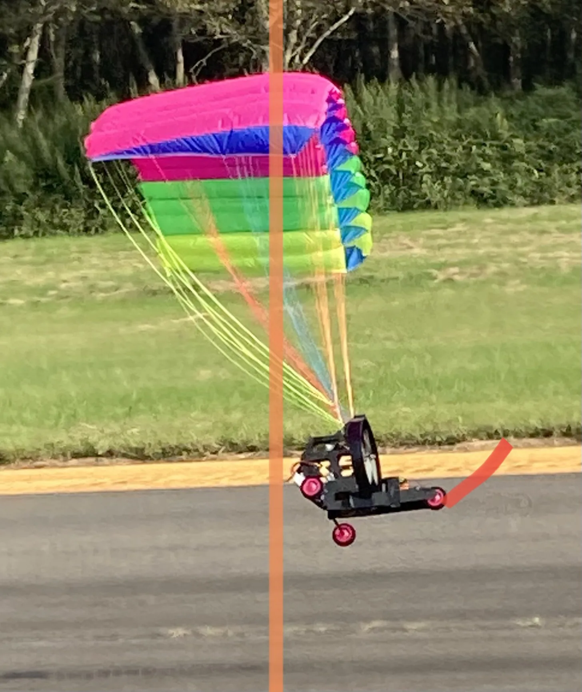

3次元経路生成
機体の運動特性と飛行環境を考慮し、実飛行へつながる経路を生成します。

PPG TEAM / POWERED PARAGLIDER
パワードパラグライダー型飛行ロボットを対象に、3次元経路生成、風外乱やトリム変化に対応する安定化・経路追従制御を研究します。
01 / Research themes
機体の運動特性と飛行環境を考慮し、実飛行へつながる経路を生成します。
風外乱や未知のラダートリムがある状況でも経路を追従するため、外乱推定と制御を検討します。
キャノピーの展開、地上走行、飛行、計測を通して、実環境での課題を設計へ戻します。


02 / Publications & presentations
パラフォイール型飛行ロボットのための3次元経路生成および実飛行環境を想定した安定化手法の提案（ROBOMECH 2026）
Guaranteed Cost-based Disturbance Observer and Controller Design for Path Tracking Control of a Powered Paraglider Under Unknown Rudder Trim and Wind Disturbances
出典：青山学院大学 公式研究者情報（髙橋佑徳助教）（2026年10月2日確認）
03 / Explore